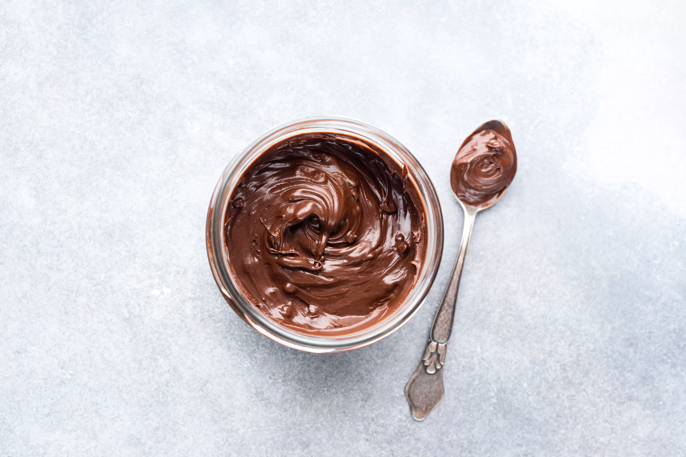

Brigadeiro
Ingredientes
- 1 Lata de leite de Condensado
- 1 Colher de sopa de Margarina
- 3 Colheres de sopa de Achocolatado
Modo de Preparo
- Acrescente todos os ingredientes em uma panela;
- Misture tudo e leve ao fogo médio;
- Mexa até que o brigadeiro desgrude do fundo da panela
- Coloque em uma tigela e deixe esfriar
- Depois guarde na geladeira.

Descubra mais receitas de Brigadeiro...